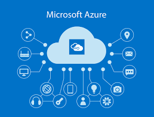
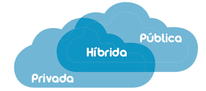

Aspectos básicos de nube Azure
|
Azure es una plataforma de informática en la nube con unconjunto de servicios ayuda a crear soluciones que satisfagan los objetivos empresariales Objetivos del aprendizaje: ->Describir los conceptos básicos de la nube ->Determinar si Azure es la solución adecuada para las necesidades ->Diferenciar entre los ditintos métodos para lograr una subscripción |
 |
|---|---|
|
--->Computo en la nube: es la entrega de servicios informáticos a través de internet ¿Por qué migrar a la nube? La nube ayuda a moverse con más rápidez, la nube proporciona 5 carcteristicas: 1° Alta disponibilidad: ofrece herramientas de alta disponibilidad como Platform as a Service y Software as a Service. 2° Escalabilidad: soluciones potentes, permitiendo escalar las posibilidades a nuestras necesidades 3° Elasticidad: permite adaptar nuestra solución a las necesidades reales que hay en cada momento 4° Agilidad: disponibilidad de servicios 5° Tolerancia a fallos: preparada para recuperarse de fallos | |
|
Economia de escalabilidad Azure permite aumentar la infrestructura a medida que se valla creciendo Existen dos tipos de costes: 1° CapEx: costes de comprar infrestructura, inversiones fuertes cubriendo las necesidades 2° OpEx: gastos operacionales Modelo de consumo (Pay as you Go) "Paga lo que consumes" | |
|
Tipología de la nube La nube se clasifica en tre: 1° Pública: Los servicios se ofrecen a través de la red Internet pública y están disponibles para cualquiera que quiera comprarlos, es decir, conseguir servicios de nube de terceros como Microsoft Azure. 2° Privada: Los recursos informáticos son de uso exclusivo de los usuarios de una empresa u organización la cual se encarga de el consumo de electricidad, seguridad, mantenimiento 3° Hibrida: Entorno que combina una nube pública y una nube privada, lo que permite compartir datos y aplicaciones entre ellas. |
 |
 |
Tipos de servicios en la nube -->IaaS (Infrastructure as a Service): Modelo de servicio que es muy cercano a tener data centers fisicos. El proveedor solo se encarga del hardware. -->PaaS (Platform as a Service): Modelo de servicio en un entorno de alujamiento gestionado. El proveedor se encarga de las maquinas virtuales y recursos de red. El inquilino de las aplicaciones. -->SaaS (Software as a Service): El proveedor de nube brinda las aplicaciones y se encarga de ellas. El inquilino solo provee y se encarga de los datos. |